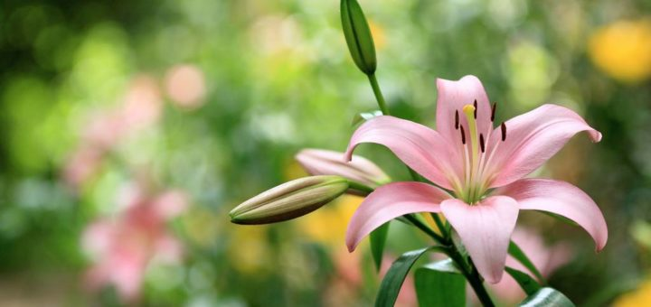
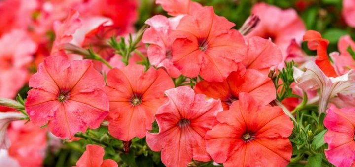

Лилия

Лилия(лат. Lilium) — многолетнее цветковое растение, относится к классу однодольные, порядку лилиецветные, семейству лилейные, роду лилия. Эти красивые цветы известны с древних времен. Изображение лилии встречается на фресках, вазах, монетах разных древних цивилизаций — Греции, Рима, Египта, Персии. У многих народов этот цветок считается символом чистоты, невинности, непорочности. Название лилия в переводе с древнекельтского обозначает «белизна», а с древнегалльского — «белый-белый».
Где растет лилия?
В дикой природе лилии растут в Северном полушарии: в Европе, Азии, несколько видов в Северной Америке и Северной Африке. Они занимают обширную территорию между 68° с. ш. и 11° с. ш. Особенно богат видами лилий Западный Китай, Юго-Восточный Тибет и Северная Бирма.
Виды лилий
В результате скрещивания различных видов лилий возникло около 10 тыс. гибридов этого растения. В 1962 году американский селекционер Ян де Граф предложил классификацию на основании их происхождения и общих биологических особенностей
. Она была принята как международная классификация лилий и используется до сих пор с учетом уточнений и дополнений. Согласно этой классификации все лилии были разделены на 3 вида:
- Triumphator
- Anastasia
- Lady Alice
Петуния

Петуния(лат. Petunia) – это многолетнее или однолетнее, травянистое или полукустарниковое цветковое растение, которое относится к классу двудольные, порядку паслёноцветные, семейству паслёновые, роду петуния FLOURS.
Первое название петунии Nicotiana axillaris появилось благодаря французскому естествоиспытателю Жану Батисту Ламарку, который в 1793 году обнаружил и описал это растение во время проведения научной экспедиции по странам Южной Америки. Эта небольшая ошибка возникла из-за схожести листьев этих растений с листьями табака. Когда же, спустя десять лет, были найдены еще несколько видов, аналогичных Nicotiana axillaris, их выделили в отдельный род, который и назвали Petunia от бразильского слова petunтабак . Русское определение растения «петуния» появилось в результате свободного прочтения научного названия цветка.
Где растет петуния?
В ареал естественного произрастания петуний входят ЮАР, Боливия, Уругвай, Парагвай и Аргентина. Один из видов встречается даже на Североамериканском континенте. В теплом климате этих стран петунии являются многолетними. Благодаря своей красоте и разнообразию форм кустов и цветков, петунии стали популярны среди цветоводов. Сегодня эти цветы культивируют в странах Западной, Центральной и Восточной Европы, в том числе на всей территории России, а также в Центральной, Средней и Юго-Западной Азии. В более прохладном климате петунии выращиваются как однолетние растения. Кроме того, во многих странах мира петунии — это любимые домашние цветы, которые растут в горшках на подоконниках, в ящиках или подвесных вазах на балконах.
Виды петуний
- Violacea
- Exserta
- Altiplana
Таблица растений
| Наличие цветов |
| Цветы |
Вид |
Наличие |
| Лилия |
Triumphator |
+ |
| Anastasia |
+ |
| Петуния |
Violacea |
+ |
| Exserta |
- |